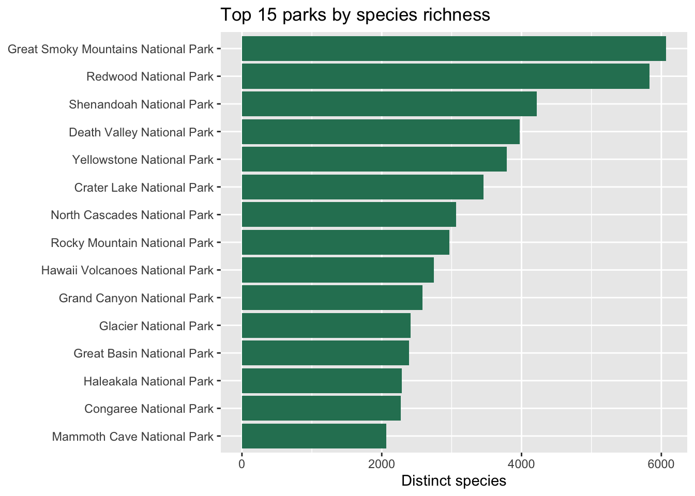
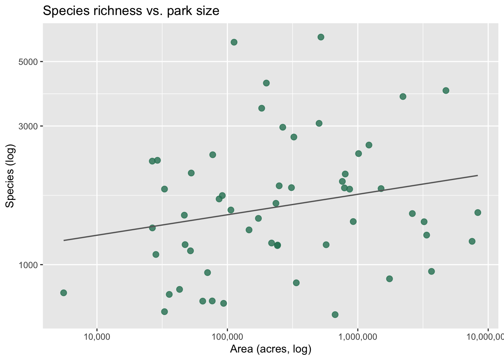
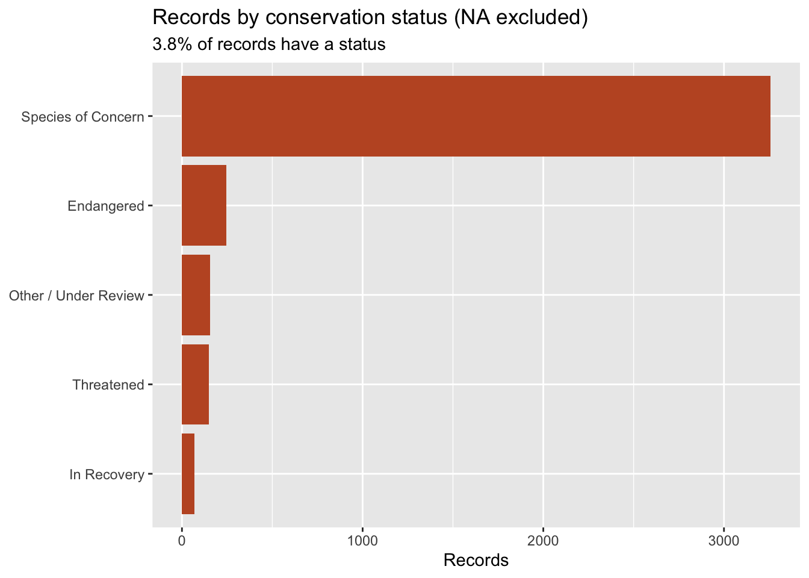
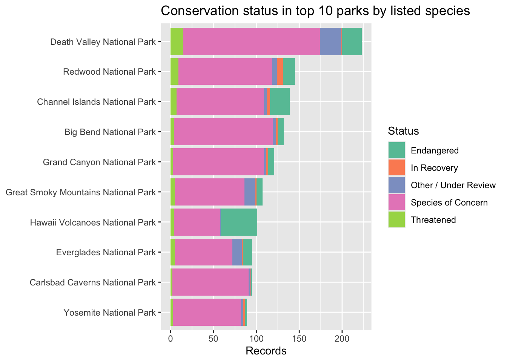
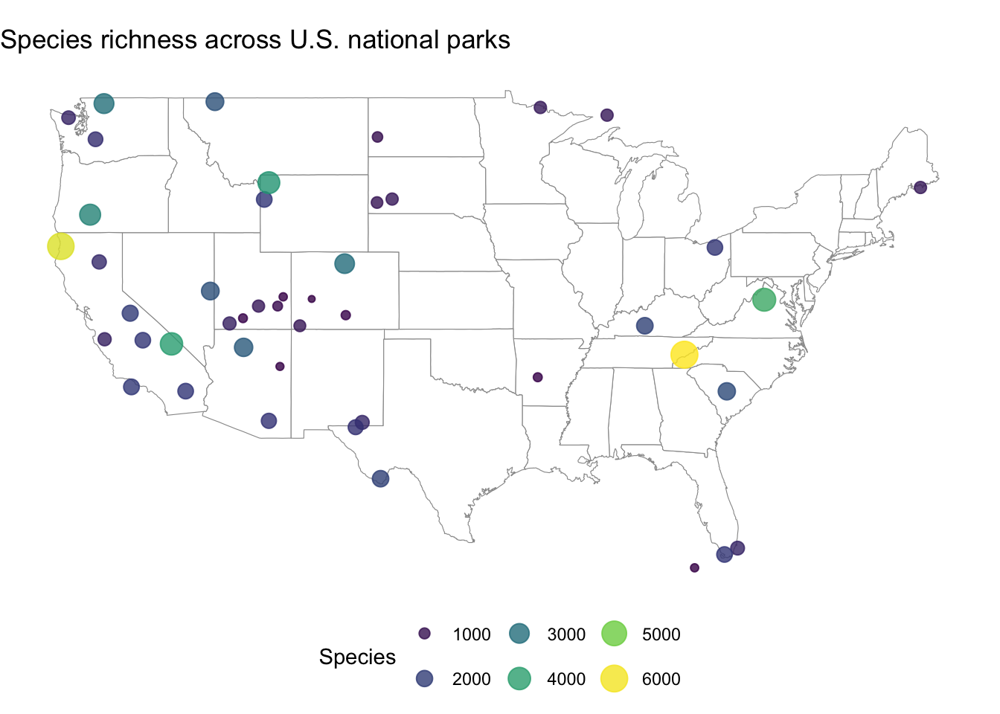

Doreen Li
r setup
load data
# A tibble: 6 × 6
`Park Code` `Park Name` State Acres Latitude Longitude
<chr> <chr> <chr> <dbl> <dbl> <dbl>
1 ACAD Acadia National Park ME 47390 44.4 -68.2
2 ARCH Arches National Park UT 76519 38.7 -110.
3 BADL Badlands National Park SD 242756 43.8 -102.
4 BIBE Big Bend National Park TX 801163 29.2 -103.
5 BISC Biscayne National Park FL 172924 25.6 -80.1
6 BLCA Black Canyon of the Gunnison Nati… CO 32950 38.6 -108. [1] 56 6 Species.ID Park.Name Category Order Family
1 ACAD-1000 Acadia National Park Mammal Artiodactyla Cervidae
2 ACAD-1001 Acadia National Park Mammal Artiodactyla Cervidae
3 ACAD-1002 Acadia National Park Mammal Carnivora Canidae
4 ACAD-1003 Acadia National Park Mammal Carnivora Canidae
5 ACAD-1004 Acadia National Park Mammal Carnivora Canidae
6 ACAD-1005 Acadia National Park Mammal Carnivora Felidae
Scientific.Name
1 Alces alces
2 Odocoileus virginianus
3 Canis latrans
4 Canis lupus
5 Vulpes vulpes
6 Lynx canadensis
Common.Names Record.Status
1 Moose Approved
2 Northern White-Tailed Deer, Virginia Deer, White-Tailed Deer Approved
3 Coyote, Eastern Coyote Approved
4 Eastern Timber Wolf, Gray Wolf, Timber Wolf Approved
5 Black Fox, Cross Fox, Eastern Red Fox, Fox, Red Fox, Silver Fox Approved
6 Canada Lynx Approved
Occurrence Nativeness Abundance Seasonality Conservation.Status X
1 Present Native Rare Resident
2 Present Native Abundant
3 Present Not Native Common Species of Concern
4 Not Confirmed Native Endangered
5 Present Unknown Common Breeder
6 Not Confirmed Native [1] 119248 14Code
Rows: 56
Columns: 6
$ park_code <chr> "ACAD", "ARCH", "BADL", "BIBE", "BISC", "BLCA", "BRCA", "CAN…
$ park_name <chr> "Acadia National Park", "Arches National Park", "Badlands Na…
$ state <chr> "ME", "UT", "SD", "TX", "FL", "CO", "UT", "UT", "UT", "NM", …
$ acres <dbl> 47390, 76519, 242756, 801163, 172924, 32950, 35835, 337598, …
$ latitude <dbl> 44.35, 38.68, 43.75, 29.25, 25.65, 38.57, 37.57, 38.20, 38.2…
$ longitude <dbl> -68.21, -109.57, -102.50, -103.25, -80.08, -107.72, -112.18,…Rows: 119,248
Columns: 14
$ species_id <chr> "ACAD-1000", "ACAD-1001", "ACAD-1002", "ACAD-1003"…
$ park_name <chr> "Acadia National Park", "Acadia National Park", "A…
$ category <chr> "Mammal", "Mammal", "Mammal", "Mammal", "Mammal", …
$ order <chr> "Artiodactyla", "Artiodactyla", "Carnivora", "Carn…
$ family <chr> "Cervidae", "Cervidae", "Canidae", "Canidae", "Can…
$ scientific_name <chr> "Alces alces", "Odocoileus virginianus", "Canis la…
$ common_names <chr> "Moose", "Northern White-Tailed Deer, Virginia Dee…
$ record_status <chr> "Approved", "Approved", "Approved", "Approved", "A…
$ occurrence <chr> "Present", "Present", "Present", "Not Confirmed", …
$ nativeness <chr> "Native", "Native", "Not Native", "Native", "Unkno…
$ abundance <chr> "Rare", "Abundant", "Common", "", "Common", "", ""…
$ seasonality <chr> "Resident", "", "", "", "Breeder", "", "Vagrant", …
$ conservation_status <chr> "", "", "Species of Concern", "Endangered", "", ""…
$ x <chr> "", "", "", "", "", "", "", "", "", "", "", "", ""…Data cleaning
Code
species <- species |>
select(where(~ !all(is.na(.x)))) |> # drop columns that are entirely empty
mutate(across(where(is.character), ~ na_if(str_trim(.x), ""))) |> # trim whitespace; blank strings -> NA
distinct() |> # remove duplicate rows
filter(occurrence == "Present" | is.na(occurrence)) # keep records where the species is present
# Blank Conservation Status values stay as NA (not recoded to "Not Listed")
cat("Conservation Status NA:", sum(is.na(species$conservation_status)),
sprintf("(%.1f%%)\n", 100 * mean(is.na(species$conservation_status))))Conservation Status NA: 99539 (96.2%) conservation_status n
1 <NA> 99539
2 Species of Concern 3259
3 Endangered 229
4 Under Review 157
5 Threatened 147
6 In Recovery 69
7 Proposed Endangered 17
8 Proposed Threatened 3Code
# Group non-missing statuses into broader categories (NA stays NA)
species <- species |>
mutate(
status_group = case_when(
is.na(conservation_status) ~ NA_character_,
str_detect(str_to_lower(conservation_status), "extinct") ~ "Extinct",
str_detect(str_to_lower(conservation_status), "endangered") ~ "Endangered",
str_detect(str_to_lower(conservation_status), "threatened") ~ "Threatened",
str_detect(str_to_lower(conservation_status), "recovery") ~ "In Recovery",
str_detect(str_to_lower(conservation_status), "concern") ~ "Species of Concern",
TRUE ~ "Other / Under Review"
),
has_status = !is.na(conservation_status) # TRUE if the species has any conservation status
)
# Check: do all park names in species appear in parks?
species |> distinct(park_name) |> anti_join(parks, by = "park_name")[1] park_name
<0 rows> (or 0-length row.names)Code
# One row per park: richness and conservation-status counts
park_stats <- species |>
group_by(park_name) |>
summarise(
n_species = n_distinct(scientific_name),
n_with_status = n_distinct(scientific_name[has_status]),
n_endangered = n_distinct(scientific_name[status_group %in% "Endangered"]),
.groups = "drop"
) |>
mutate(pct_with_status = 100 * n_with_status / n_species) |>
left_join(parks, by = "park_name") |>
mutate(species_per_1000_acres = n_species / (acres / 1000))Viz 1- Distribution of species richness across U.S. National Parks
Viz 2- Top 15 parks by species richness
Code

Viz 3- Park area vs. species richness
Code
park_stats |>
filter(!is.na(acres)) |>
ggplot(aes(acres, n_species)) +
geom_point(alpha = .8, color = "#2a7f62", size = 2.5) +
geom_smooth(method = "lm", se = FALSE, color = "grey40", linewidth = .6) +
scale_x_log10(labels = scales::comma) + scale_y_log10() +
labs(title = "Species richness vs. park size", x = "Area (acres, log)", y = "Species (log)")
Viz 4- Distribution of conservation status (exclude NA)
Code
species |>
filter(!is.na(status_group)) |>
count(status_group) |>
ggplot(aes(x = n, y = reorder(status_group, n))) +
geom_col(fill = "#c0562b") +
labs(title = "Records by conservation status (NA excluded)",
subtitle = sprintf("%.1f%% of records have a status", 100 * mean(species$has_status)),
x = "Records", y = NULL)
Viz 6- Status in the 10 parks with the most listed species
Code
top10 <- park_stats |> slice_max(n_with_status, n = 10) |> pull(park_name)
species |>
filter(park_name %in% top10, !is.na(status_group)) |>
count(park_name, status_group) |>
ggplot(aes(x = n, y = reorder(park_name, n, sum), fill = status_group)) +
geom_col() +
scale_fill_brewer(palette = "Set2") +
labs(title = "Conservation status in top 10 parks by listed species",
x = "Records", y = NULL, fill = "Status")
Viz 7 - Species richness by park in the U.S.
Code
# convert parks to sf point data (longitude/latitude, CRS 4326)
park_sf <- park_stats |>
filter(!is.na(latitude), !is.na(longitude)) |>
st_as_sf(coords = c("longitude", "latitude"), crs = 4326, remove = FALSE)
#state boundaries as the base map (from the maps package)
us_states_sf <- st_as_sf(maps::map("state", plot = FALSE, fill = TRUE))
if (is.na(st_crs(us_states_sf))) us_states_sf <- st_set_crs(us_states_sf, 4326) # set CRS if missing
us_states_sf <- st_transform(us_states_sf, crs = st_crs(park_sf)) # match the parks' CRS
# static maps cover the lower 48 states only; Alaska/Hawaii parks appear in the leaflet map (4.3)
lower48_x <- c(-125, -66)
lower48_y <- c(24, 50)
#viz 7
ggplot() +
geom_sf(data = us_states_sf, fill = "white", color = "grey60") +
geom_sf(data = park_sf, aes(size = n_species, color = n_species), alpha = .8) +
scale_color_viridis_c(guide = "legend") +
coord_sf(xlim = lower48_x, ylim = lower48_y) +
labs(title = "Species richness across U.S. national parks",
color = "Species", size = "Species") +
theme_void() +
theme(legend.position = "bottom")
Viz 8- interactive map (includes Alaska and Hawaii)
Code
pal <- colorNumeric("viridis", domain = park_sf$n_species) # color palette for species richness
leaflet(park_sf) |>
addProviderTiles("OpenStreetMap.Mapnik") |>
addCircleMarkers(
lng = ~longitude, lat = ~latitude,
radius = ~sqrt(n_species) / 3, # circle size scales with richness
color = ~pal(n_species), fillOpacity = 0.8, stroke = FALSE,
popup = ~paste0("<b>", park_name, "</b><br>", # click a circle to see details
"Species: ", n_species, "<br>",
"With status: ", n_with_status,
" (", round(pct_with_status, 1), "%)")
) |>
addLegend(pal = pal, values = ~n_species, title = "Species")